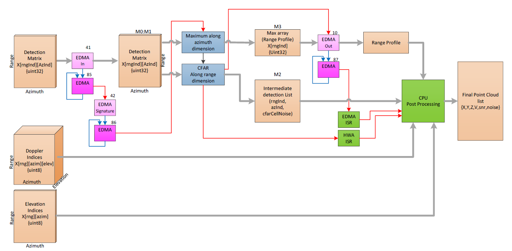
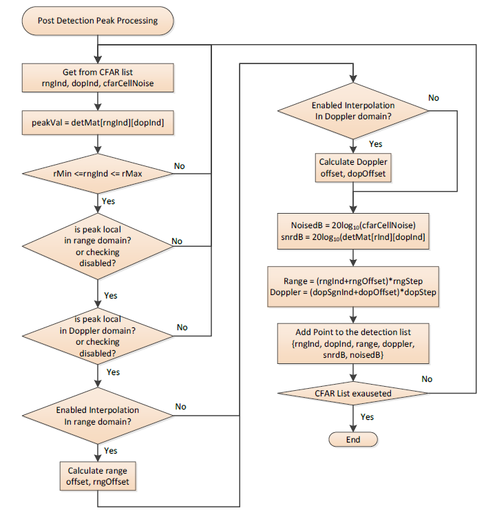
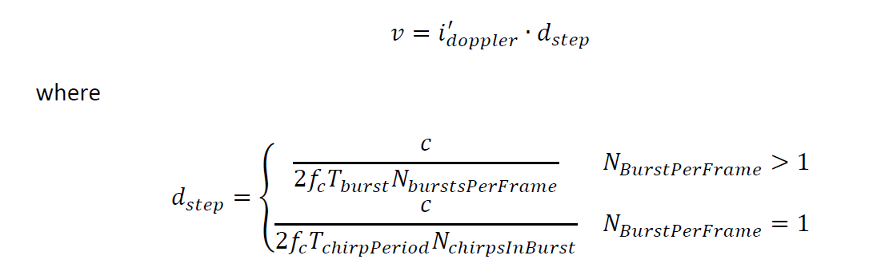

Introduction
The CFAR DPU is updated in the latest SDK release by introducing support for an additional input detection matrix type, the range-doppler detection matrix. This new addition complements the existing input rangeazimuth detection matrix type.
CFAR DPU when the input is range-azimuth detection matrix
The CFAR DPU performs peak detection algorithm applied on the range-azimuth heatmap created by DOA DPU. The detection process is split into two stages. In the first stage, executed on HWA, a CFAR detection algorithm is applied to the range-azimuth heatmap. The output of CFAR detection is the intermediate list of detected points. Each point in the intermediate list is defined by the three-element structure including the range index (rngInd), the azimuth index (azInd) and the CFAR cell average noise (cfarCellNoise). The HWA also computes the array of maxima along the azimuth dimension, for each range index. This array is used in the second stage, in the post detection peak processing. It is also optionally sent to the Host as a visual representation of the range profile. In the second stage processing, performed by CPU, the final point cloud list is created.
Block Diagram
The top-level block diagram of the DPU is shown in the figure below.

CFAR DPU top-level diagram
The CFAR processing detailed block diagram is shown below.

CFAR DPU block diagram
Post detection peak processing is shown below

Post detection peak processing
CFAR DPU Functioning
The processing flow is per detected point from the intermediate detection list, CFAR output list. If the detected peak satisfies all detection criteria it is placed in the final point cloud list. The following criteria must be satisfied:
- Peak falls inside a region of interest: Each detected point is check to see if it falls in the region of interest specified by the CLI FOV commands. The boundaries of the region of interest in range, azimuth and elevation direction converted to indices are denoted as in the flow diagram as:
- rMin – minimum index in range dimension
- rMax – maximum index in range dimension
- aMin – minimum index in azimuth dimension
- aMax – maximum index in azimuth dimension
- eMin – minimum index in elevation dimension
- eMax – maximum index in elevation dimension
- Peak is local in range dimension: If this option is enabled in the cfarCfg command, the algorithm checks to see if the peak is a local peak in the range dimension: 𝑋𝑘−1,𝑗 ≤ 𝑋𝑘,𝑗 ≤ 𝑋𝑘+1,𝑗 (where 𝑘 is range index of detected peak).
- Peak is local in azimuth dimension: If this option is enabled in the cfarCfg command, the algorithm checks to see if the peak is a local peak in the azimuth dimension: 𝑋𝑘,𝑗−1 ≤ 𝑋𝑘,𝑗 ≤ 𝑋𝑘,𝑗+1 (where 𝑗 is azimuth index of detected peak).
- Peak is equal or greater than the side lobe threshold: The peak is checked against the side lobe threshold, 𝑇𝑘. The side lobe threshold is calculated for each range index value, as a maximum along the azimuth dimension multiplied with a fixed threshold scale. The maximum per range index, (also called as a range profile), is calculate by HWA (see Figure 12). The threshold scale, (0 to 1), is provided by the CLI cfarCfg command. The condition is: 𝑋𝑘,𝑗≥𝑇𝑘
Once all of these criteria are satisfied the further processing includes the following calculations.
- Peak position interpolation in range dimension: If the checking option is enabled in the cfarCfg command, the peak range index is corrected by fractional correction term 𝛿𝑟. The interpolation formula to calculate 𝛿𝑟 is given by
- 𝛿𝑟 = 𝑃(|𝑋𝑘+1|−|𝑋𝑘−1|) / (|𝑋𝑘|+|𝑋𝑘+1|+|𝑋𝑘−1|) (where 𝑃=1.75)
- The range peak index 𝑘, is then corrected as: 𝑘𝑝𝑒𝑎𝑘 = 𝑘+𝛿𝑟
- The range estimate, 𝑟, in meters is calculated as: 𝑟 = 𝑘𝑝𝑒𝑎𝑘∙𝑟𝑠𝑡𝑒𝑝 where 𝑟𝑠𝑡𝑒𝑝 is range bin to meter conversion 𝑟𝑠𝑡𝑒𝑝 = 𝑐∙𝐹𝑆𝑎𝑚𝑝 / 2∙𝑆∙𝑁𝐴𝐷𝐶 (where 𝑐 is speed of light, 𝐹𝑆𝑎𝑚𝑝 is sampling frequency, 𝑆 is chirp frequency slope, and 𝑁𝐴𝐷𝐶 is number of ADC samples).
- Peak position interpolation in azimuth dimension: If the checking option is enabled in azimuth dimension, the peak azimuth index is corrected by fractional correction term 𝛿𝑎. The interpolation formula to calculate 𝛿𝑎 is given by
- 𝛿𝑎 = (|𝑋𝑘+1|−|𝑋𝑘−1|)(4|𝑋𝑘|−2|𝑋𝑘+1|−2|𝑋𝑘−1|)
- The azimuth peak index 𝑗, (previously converted to signed value), is corrected as: 𝑗𝑝𝑒𝑎𝑘 = 𝑗+𝛿𝑎
- Calculation of X,Y,Z coordinates: The symbol phase increment between successive elements of antenna array in 𝑥 dimension is given by 𝑊𝑥 = 𝜆∙𝑗𝑝𝑒𝑎𝑘 / d.𝑁𝐹𝐹𝑇𝑎𝑧𝑖𝑚, where 𝑑 is the distance between successive elements of the virtual antenna array and 𝑁𝐹𝐹𝑇𝑎𝑧𝑖𝑚 is azimuth FFT size.
- The 𝑥 coordinate is calculated as 𝑥 = 𝑟∙𝑊𝑥
- The symbol phase increment between successive elements of antenna array in 𝑧 dimension is given by 𝑊𝑧 = −𝜆∙𝑙𝑝𝑒𝑎𝑘 / 𝑑∙𝑁𝐹𝐹𝑇𝑒𝑙𝑒𝑣, where 𝑙𝑝𝑒𝑎𝑘 is elevation index (converted to signed value) of the peak and 𝑁𝐹𝐹𝑇𝑒𝑙𝑒𝑣 is elevation FFT size.
- The 𝑧 coordinate is calculated as 𝑧 = 𝑟∙𝑊𝑧
- The 𝑦 coordinate is calculated as
- Calculation of radial velocity: The radial velocity of the detected point is calculated as
𝑖𝑑𝑜𝑝𝑝𝑙𝑒𝑟 is the signed value of the detected point Doppler index taken from the Doppler index table.Positive velocity means that the target is moving away from the sensor and vice versa. In the case when the noncoherent Doppler summation mode is selected, the radial velocity is set to zero.
- Calculation of noise and SNR: The noise of the detected point is calculated from the CFAR cell side noise as 𝑛𝑜𝑖𝑠𝑒𝑑𝐵=20log10(cfarCellNoise) and the snr is calculated as 𝑠𝑛𝑟𝑑𝐵 = 20log10(𝑋(𝑘,𝑗)) − 𝑛𝑜𝑖𝑠𝑒𝑑𝐵 where is 𝑋(𝑘,𝑗) a peak value read out from the detection matrix. The noise and the and the snr are stored in the point cloud in uint16 format, where 1LSB =0.1dB.
Each point in the CFAR output point cloud list is described by a structure below
typedef struct DPIF_PointCloudCartesianExt_t
{
float x;
float y;
float z;
float velocity;
float snr;
float noise;
} DPIF_PointCloudCartesianExt;
CFAR DPU when the input is range-doppler detection matrix
Block Diagram
The top-level block diagram of the DPU is shown in the figure below.

CFAR DPU top-level diagram
The CFAR processing detailed block diagram is shown below.

CFAR DPU block diagram
Post detection peak processing is shown below

Post detection peak processing
CFAR DPU Functioning
The processing flow is per detected point from the intermediate detection list, CFAR output list. If the detected peak satisfies all detection criteria it is placed in the final detection list. The following criteria must be satisfied:
- Peak falls inside a region of interest: Each detected point is check to see if it falls in the region of interest specified by the CLI FOV commands. The boundaries of the region of interest in range, azimuth and elevation direction converted to indices are denoted as in the flow diagram as:
- rMin – minimum index in range dimension
- rMax – maximum index in range dimension
- Peak is local in range dimension: If this option is enabled in the cfarCfg command the algorithm checks to see if the peak is a local peak in the range dimension: 𝑋𝑘−1,𝑗 ≤ 𝑋𝑘,𝑗 ≤ 𝑋𝑘+1,𝑗 (where 𝑘 is range index of detected peak).
- Peak is local in Doppler dimension: If this option is enabled in the cfarCfg command, the algorithm checks to see if the peak is a local peak in the Doppler dimension: 𝑋𝑘,𝑗−1 ≤ 𝑋𝑘,𝑗 ≤ 𝑋𝑘,𝑗+1 (where 𝑗 is doppler index of detected peak).
- Peak position interpolation in range dimension: If the checking option is enabled in the cfarCfg command, the peak range index is corrected by fractional correction term 𝛿𝑟. The interpolation formula to calculate 𝛿𝑟 is given by:
- 𝛿𝑟 = 𝑃(|𝑋𝑘+1|−|𝑋𝑘−1|) / (|𝑋𝑘|+|𝑋𝑘+1|+|𝑋𝑘−1|) (where 𝑃=1.75)
- The range peak index 𝑘, is then corrected as: 𝑘𝑝𝑒𝑎𝑘 = 𝑘+𝛿𝑟
- The range estimate, 𝑟, in meters is calculated as: 𝑟 = 𝑘𝑝𝑒𝑎𝑘∙𝑟𝑠𝑡𝑒𝑝 - 𝑟𝐵𝑖𝑎𝑠 where 𝑟𝑠𝑡𝑒𝑝 is range bin to meter conversion 𝑟𝑠𝑡𝑒𝑝 = 𝑐∙𝐹𝑆𝑎𝑚𝑝 / 2∙𝑆∙𝑁𝐴𝐷𝐶 (where 𝑐 is speed of light, 𝐹𝑆𝑎𝑚𝑝 is sampling frequency, 𝑆 is chirp frequency slope, 𝑁𝐴𝐷𝐶 is number of ADC samples and 𝑟𝐵𝑖𝑎𝑠 is range bias provided by the CLI command compRangeBiasAndRxChanPhase).
- Peak position interpolation in doppler dimension: If the checking option is enabled in Doppler dimension, the peak Doppler index is corrected by fractional correction term 𝛿𝑑. The interpolation formula to calculate 𝛿𝑑 is given by
- 𝛿𝑎=(|𝑋𝑘+1|−|𝑋𝑘−1|)(4|𝑋𝑘|−2|𝑋𝑘+1|−2|𝑋𝑘−1|)
- The Doppler peak index 𝑖𝑑𝑜𝑝𝑝𝑙𝑒𝑟, (previously converted to signed value), is corrected as: 𝑖′𝑑𝑜𝑝𝑝𝑙𝑒𝑟 = 𝑖𝑑𝑜𝑝𝑝𝑙𝑒𝑟+𝛿𝑎
- Calculation of radial velocity: The radial velocity of the detected point is calculated as

𝑖𝑑𝑜𝑝𝑝𝑙𝑒𝑟 stored in the output list is the signed value of the detected point Doppler index. Positive velocity means that the target is moving away from the sensor and vice versa.
- Calculation of noise and SNR: The noise of the detected point is calculated from the CFAR cell side noise as 𝑛𝑜𝑖𝑠𝑒𝑑𝐵=20log10(cfarCellNoise) and the snr is calculated as 𝑠𝑛𝑟𝑑𝐵 = 20log10(𝑋(𝑘,𝑗)) − 𝑛𝑜𝑖𝑠𝑒𝑑𝐵 where is 𝑋(𝑘,𝑗) a peak value read out from the detection matrix.
Each point in the CFAR output point cloud list is described by a structure below
typedef struct DPIF_CFARRngDopDetListElement_t
{
float range;
float doppler;
uint16_t rangeIdx;
int16_t dopplerIdx;
float snrdB;
float noisedB;
} DPIF_CFARRngDopDetListElement;
CFAR CLI Command
Since the CFAR DPU is updated to support processing on the range-doppler heatmap in addition to range-azimuth heatmap, the interpretation of some parameters in the CLI command varies depending on the operation mode. In the range-doppler mode, these parameters are associated with Doppler dimension, whereas in the range-azimuth mode, they pertain to the azimuth dimension as described in Table below. Note that the side lobe threshold is applicable only to azimuth in both dimensions but, used in different DPUs.
| Parameter original name | Range-Azimuth Input mode | Range-Doppler Input mode |
| sideLobeThreshold | Used in CFAR DPU, applied in azimuth domain | Used in AoA2D DPU, applied in azimuth domain |
| localMaxAzimuthDomain | Pertain to azimuth dimension | Pertain to Doppler dimension |
| interpolateAzimuthDomain | Pertain to azimuth dimension | Pertain to Doppler dimension |
Usage Overview
API
The CFAR DPU detection APIs are listed below.
- DPU_CFARProcHWA_init(): This function allocates memory for the CFAR DPU instance and initializes it to zero. It also constructs the semaphores used for processing.
- DPU_CFARProcHWA_config(): Based on the configuration parameters, this function configures hardware accelerator CFAR engine and the input and output EDMA channels to bring detection matrix in HWA memory, and take out range profile array. The function is normally called one time before the sensor start command is issued to the RF. In the low power deep sleep mode, the function is called per frame. The DPU mode of operation is determined by the parameter detectionHeatmapType, within the input configuration structure. This parameter determines the type of the input detection matrix, whether it is range-doppler or range-azimuth, as well as the type of postprocessing after the CFAR operation. Thus this parameter determines the mode of operation of the CFAR DPU, as shown in Table below.
| detectionHeatmapType | CFAR mode of operation
|-------------------------------|:-----------------------|
|DPU_CFAR_RANGE_AZIMUTH_HEATMAP | range-azimuth mode |
|DPU_CFAR_RANGE_DOPPLER_HEATMAP |range-doppler mode |
DPU_CFARProcHWA_process(): This description This function is called per frame after
- the DOA DPU is completed in in range-azimuth mode, or
- the Doppler DPU is completed in range-doppler mode.
The output arguments to the function are
- pointer to the range profile array,
- pointer to the output detection list:
- the final point-cloud list, in range-azimuth mode, or
- the range-doppler detection list.
The function performs the following steps:
- configures the source address of the input EDMA parameter,
- configures destination address of the output EDMA parameter,
- configures the common registers of the HWA, such as start and end param set, and the number of loops,
- triggers the input EDMA,
- pends on the semaphores for the end of the processing as the entire chain processing is performed by HWA.
- Performs the post detection processing by calling function:
- CFAR_DET_HWA_cfarRange_ProcList(), in range-azimuth mode, or
- CFAR_DET_HWA_cfarRangeDoppler_ProcList() in range-doppler mode.
Example Usage
Include the below file to access the APIs
DPU Initialization Example
if (cfarProcDpuHandle == NULL)
{
CLI_write ("Error: CFAR Proc DPU initialization returned error %d\n", errorCode);
return;
}
DPU Configuration Parsing Example
pHwConfig = &cfarProcDpuCfg.res;
params = &cfarProcDpuCfg.staticCfg;
pHwConfig->hwaCfg.dmaTrigSrcChan = DPC_ObjDet_HwaDmaTrigSrcChanPoolAlloc(&gMmwMssMCB.HwaDmaChanPoolObj);
pHwConfig->edmaHandle = gEdmaHandle[0];
pHwConfig->edmaHwaIn.channel = DPC_OBJDET_DPU_CFAR_PROC_EDMAIN_CH;
pHwConfig->edmaHwaIn.channelShadow = DPC_OBJDET_DPU_CFAR_PROC_EDMAIN_SHADOW;
pHwConfig->edmaHwaIn.eventQueue = DPC_OBJDET_DPU_CFAR_PROC_EDMAIN_EVENT_QUE;
pHwConfig->edmaHwaInSignature.channel = DPC_OBJDET_DPU_CFAR_PROC_EDMAIN_SIG_CH;
pHwConfig->edmaHwaInSignature.channelShadow = DPC_OBJDET_DPU_CFAR_PROC_EDMAIN_SIG_SHADOW;
pHwConfig->edmaHwaInSignature.eventQueue = DPC_OBJDET_DPU_CFAR_PROC_EDMAIN_SIG_EVENT_QUE;
pHwConfig->intrObj = &intrObj_cfarProc;
pHwConfig->edmaHwaOut.channel = DPC_OBJDET_DPU_CFAR_PROC_EDMAOUT_RNG_PROFILE_CH;
pHwConfig->edmaHwaOut.channelShadow = DPC_OBJDET_DPU_CFAR_PROC_EDMAOUT_RNG_PROFILE_SHADOW;
pHwConfig->edmaHwaOut.eventQueue = DPC_OBJDET_DPU_CFAR_PROC_EDMAOUT_RNG_PROFILE_EVENT_QUE;
pHwConfig->hwaMemInp = (uint16_t *) CSL_APP_HWA_DMA0_RAM_BANK0_BASE;
pHwConfig->hwaMemInpSize = (CSL_APP_HWA_BANK_SIZE * 2) / sizeof(uint16_t);
pHwConfig->hwaMemOutDetListSize = CSL_APP_HWA_BANK_SIZE /
cfarProcDpuCfg.dynCfg.cfarCfg = &gMmwMssMCB.cfarCfg;
cfarProcDpuCfg.dynCfg.fovRange = &gMmwMssMCB.rangeSelCfg;
cfarProcDpuCfg.dynCfg.fovAoaCfg = &gMmwMssMCB.fovCfg;
params->numRangeBins = gMmwMssMCB.numRangeBins;
params->numDopplerBins = gMmwMssMCB.numDopplerBins;
params->log2NumDopplerBins = mathUtils_ceilLog2(params->numDopplerBins);
params->selectCoherentPeakInDopplerDim = gMmwMssMCB.sigProcChainCfg.coherentDoppler;
params->angleDimension = gMmwMssMCB.angleDimension;
params->isDetMatrixLogScale = false;
params->azimuthFftSize = gMmwMssMCB.sigProcChainCfg.azimuthFftSize;
params->elevationFftSize = gMmwMssMCB.sigProcChainCfg.elevationFftSize;
params->isStaticClutterRemovalEnabled = gMmwMssMCB.staticClutterRemovalEnable;
gMmwMssMCB.adcStartTime = (gMmwMssMCB.profileTimeCfg.h_ChirpAdcStartTime >> 10) * (1/gMmwMssMCB.adcSamplingRate);
adcStart = (gMmwMssMCB.adcStartTime * 1.e-6);
startFreq = (float)(gMmwMssMCB.startFreq * 1.e9);
slope = (float)(gMmwMssMCB.chirpSlope * 1.e12);
bandwidth = (slope * gMmwMssMCB.profileComCfg.h_NumOfAdcSamples)/(gMmwMssMCB.adcSamplingRate * 1.e6);
centerFreq = startFreq + bandwidth * 0.5f + adcStart * slope;
params->rangeStep = (MMWDEMO_RFPARSER_SPEED_OF_LIGHT_IN_METERS_PER_SEC * (gMmwMssMCB.adcSamplingRate * 1.e6)) /
(2.f * slope * (2*params->numRangeBins));
gMmwMssMCB.rangeStep = params->rangeStep;
if (gMmwMssMCB.frameCfg.h_NumOfBurstsInFrame > 1)
{
params->dopplerStep = MMWDEMO_RFPARSER_SPEED_OF_LIGHT_IN_METERS_PER_SEC /
(2.f * params->numDopplerBins *
centerFreq * (gMmwMssMCB.burstPeriod * 1e-6));
}
else
{
params->dopplerStep = MMWDEMO_RFPARSER_SPEED_OF_LIGHT_IN_METERS_PER_SEC /
(2.f * gMmwMssMCB.frameCfg.h_NumOfChirpsInBurst *
centerFreq * ((gMmwMssMCB.profileTimeCfg.h_ChirpIdleTime + gMmwMssMCB.profileComCfg.h_ChirpRampEndTime) * 1e-1 * 1e-6));
if(gMmwMssMCB.frameCfg.c_NumOfChirpsAccum != 0)
{
params->dopplerStep = params->dopplerStep/gMmwMssMCB.frameCfg.c_NumOfChirpsAccum;
}
}
if (gMmwMssMCB.antennaGeometryCfg.antDistanceXdim == 0.)
{
params->lambdaOverDistX = 2.0;
}
else
{
params->lambdaOverDistX = 3e8 / (centerFreq * gMmwMssMCB.antennaGeometryCfg.antDistanceXdim);
}
if (gMmwMssMCB.antennaGeometryCfg.antDistanceZdim == 0.)
{
params->lambdaOverDistZ = 2.0;
}
else
{
params->lambdaOverDistZ = 3e8 / (centerFreq * gMmwMssMCB.antennaGeometryCfg.antDistanceZdim);
}
params->rangeBias = gMmwMssMCB.compRxChannelBiasCfg.rangeBias;
if(gMmwMssMCB.adcDataSourceCfg.source == 1)
{
params->enableCfarPointCloudListWithIndices = true;
}
else
{
params->enableCfarPointCloudListWithIndices = false;
}
pHwConfig->dopplerIndexMatrix = gMmwMssMCB.dopplerIndexMatrix;
pHwConfig->elevationIndexMatrix = gMmwMssMCB.elevationIndexMatrix;
gMmwMssMCB.pointCloudToUart.pointUint.xyzUnit = (params->rangeStep * params->numRangeBins) / 32768.0;
gMmwMssMCB.pointCloudToUart.pointUint.dopplerUnit = (params->dopplerStep * params->numDopplerBins/2) / 32768.0;
gMmwMssMCB.pointCloudToUart.pointUint.snrUint = 0.25;
gMmwMssMCB.pointCloudToUart.pointUint.noiseUint = 1.0;
gMmwMssMCB.pointCloudUintRecip.xyzUnit = 1. / gMmwMssMCB.pointCloudToUart.pointUint.xyzUnit;
gMmwMssMCB.pointCloudUintRecip.dopplerUnit = 1. / gMmwMssMCB.pointCloudToUart.pointUint.dopplerUnit;
gMmwMssMCB.pointCloudUintRecip.snrUint = 1. / gMmwMssMCB.pointCloudToUart.pointUint.snrUint;
gMmwMssMCB.pointCloudUintRecip.noiseUint = 1. / gMmwMssMCB.pointCloudToUart.pointUint.noiseUint;
if(gMmwMssMCB.enableMajorMotion)
{
gMmwMssMCB.cfarRunTimeInputParams[0].forceVelocityToZero = false;
gMmwMssMCB.cfarRunTimeInputParams[0].velocityInclusionThr = params->dopplerStep * params->numDopplerBins/2;
}
if(gMmwMssMCB.enableMinorMotion)
{
gMmwMssMCB.cfarRunTimeInputParams[1].forceVelocityToZero = gMmwMssMCB.sigProcChainCfg.forceMinorMotionVelocityToZero;
gMmwMssMCB.cfarRunTimeInputParams[1].velocityInclusionThr = gMmwMssMCB.sigProcChainCfg.minorMotionVelocityInclusionThr;
}
DPU Configuration Example
if (retVal < 0)
{
CLI_write("CFAR DPU config return error:%d \n", retVal);
}
DPU Process Trigger Example
&detMatrix[MMW_DEMO_MINOR_MODE],
&cfarRunTimeInputParams[MMW_DEMO_MINOR_MODE],
&outParmsCfar);
if(retVal < 0)
{
DebugP_log(
"DEBUG: CFAR DPU process return error:%d \n", retVal);
}
DPU Close Example
if(retVal < 0)
{
DebugP_log(
"CFARProc DPU deinit error %d\n", retVal);
}


 1.8.20
1.8.20